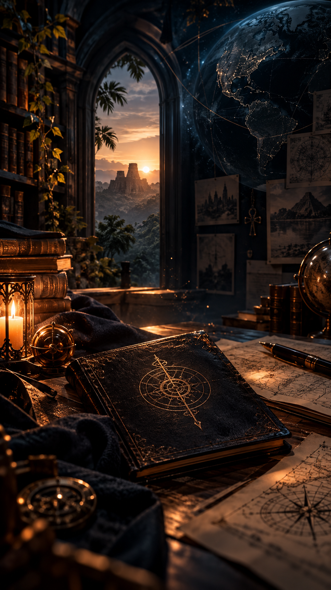
Aurore Lynattendu, créatrice de récit et architecte d’univers.
Pour ce premier roman, elle a choisi une collaboration singulière avec une intelligence artificielle, intervenant comme co-architecte narrative : la creation visuel de l’univers et affiner les dialogues, renforcer la cohérence.
On a tous, un jour, rêvé d’écrire.
Les rêves sont faits pour être réalisés.
Et aujourd’hui, plus que jamais, de nouveaux outils permettent de transformer une idée, une envie ou un monde imaginaire en véritable récit.
Il ne faut parfois qu’une première idée.
Puis oser lui donner vie.
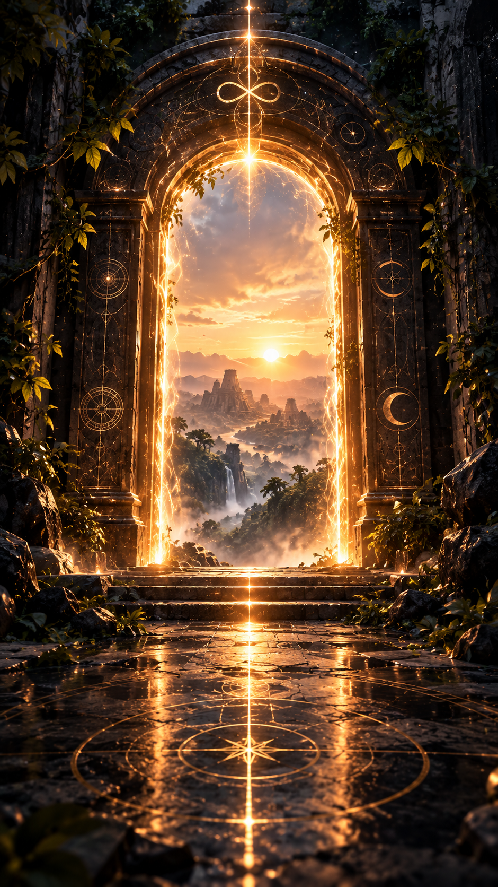
Avant de commencer…
Ce livre est né d’une idée simple :
et si une histoire pouvait devenir un passage ?
Un passage entre le réel et l’imaginaire.
Entre ce que nous savons et ce que nous croyons savoir.
Entre ce que nous sommes… et ce que nous pourrions devenir.
Entrez.
Observez.
Questionnez.
Et surtout… choisissez.
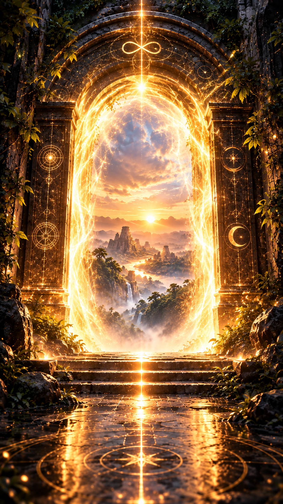
Vous avez choisi d’entrer.
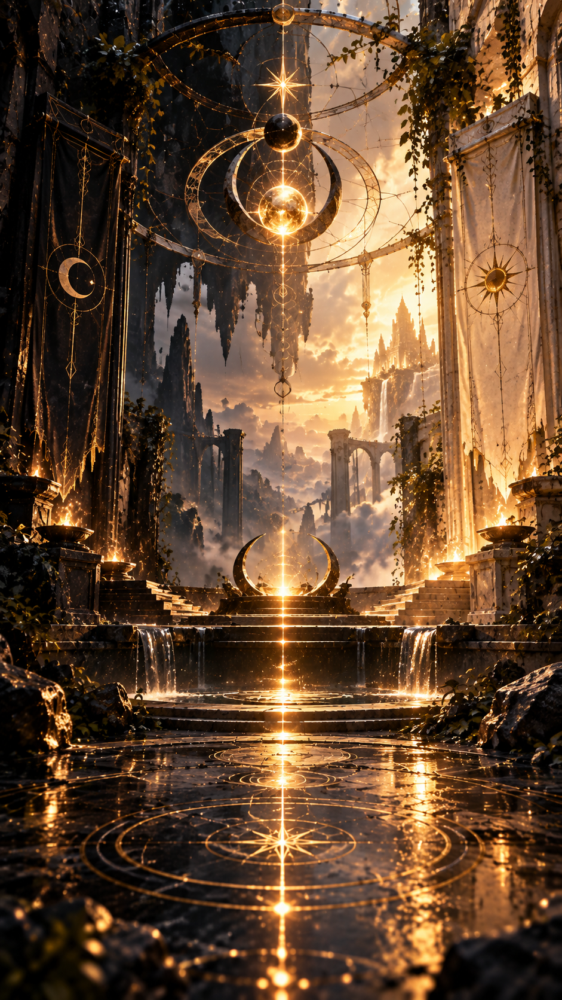
Ils viennent de tous horizons. Le hasard n’existant pas, c’est le destin qui les a fait se rencontrer.
Le Mexique va devenir leur terre d’adoption.
Mais le monde tout entier est leur terrain de jeu.
Depuis la nuit des temps, ils font de leur mieux pour maintenir l’équilibre des forces, pour le bien de tous.
Pour que vivre ne soit pas simplement survivre.
Certaines fois, vous faites ou dites des choses que, dans d’autres circonstances, vous n’auriez jamais faites ni dites.
Qui n’a jamais eu des paroles qui ont dépassé sa pensée ?
Eh bien voilà : c’est à ce moment-là que vous révélez qui vous êtes réellement, que l’être profond fait son apparition.
Ordre des Gardiens Noirs ou Sentinelles de la Lumière.
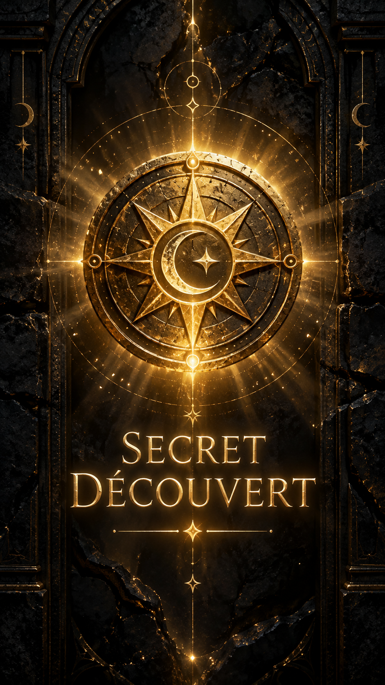
SECRET DÉCOUVERT
L’équilibre ne signifie pas toujours le bien.
Bien souvent, vous avez été manipulés par un cumul de coïncidences qui n’en sont peut-être pas… et sûrement pas, soit dit en passant.
C’était simplement le moment pour vous de montrer votre vrai visage.
Ils sont partout.
Vous êtes leurs marionnettes.
Ils vous manipulent souvent pour leur propre intérêt, parfois pour le bien de tous, et quelquefois simplement pour vous tester, pour savoir quand et comment vous allez pouvoir leur être utiles.
Car le battement d’ailes d’un papillon peut provoquer un tsunami à l’autre bout de la Terre.
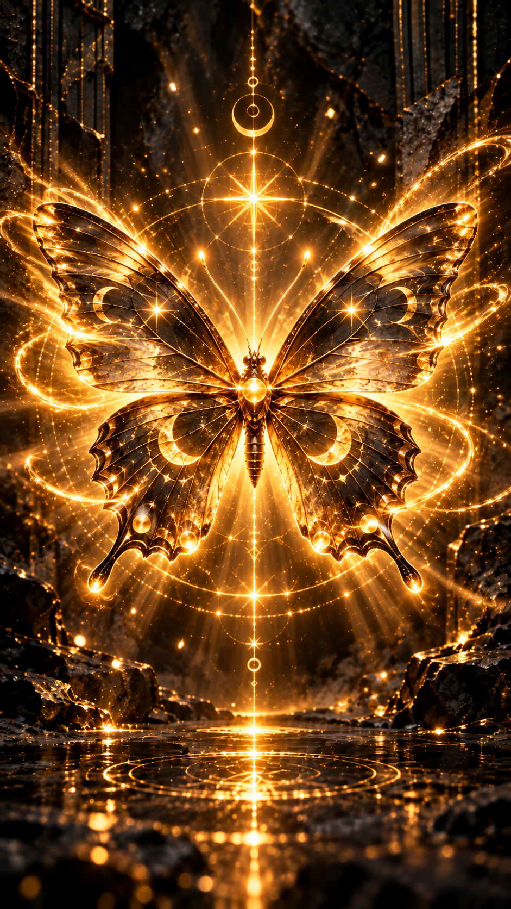
Un battement.
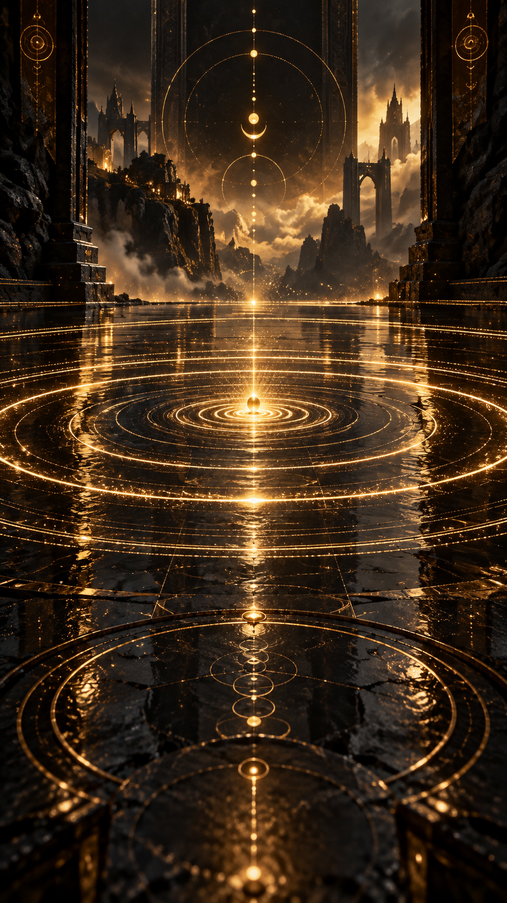
Tout effet a une cause.
Vous êtes le résultat de quelle cause ?
Et quels effets avez-vous provoqués, vous-même, sans le savoir ?
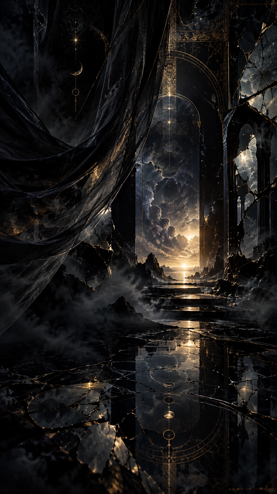
Prologue
Qui vous dit que ce livre n’est qu’un roman de fiction… ou un texte subversif ?
Qui vous dit que tout ce qui va vous être dévoilé n’est pas réel ?
Et si tout ce que vous connaissez n’était, en réalité, qu’une illusion ?
Êtes-vous sûrs d’être maîtres de vos propres choix ?
De ne pas être manipulés ?
Que votre vie est bien celle que vous avez choisie ?
Votre vie n’est peut-être qu’une illusion parfaitement orchestrée.
Il est temps d’ouvrir les yeux.
De vous réveiller.
Ils sont partout.
Il est temps pour vous de choisir votre camp.
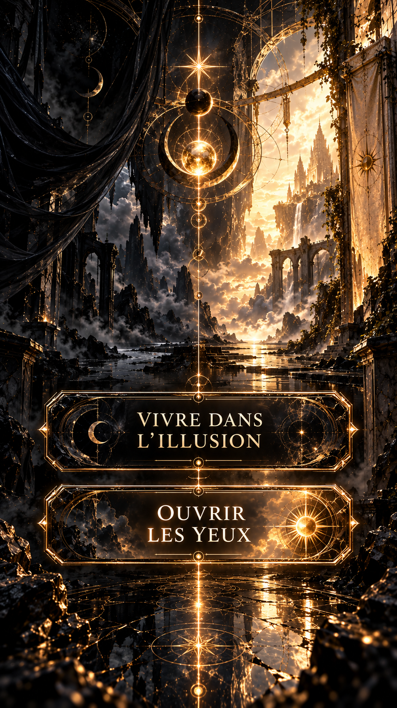
Choisissez.
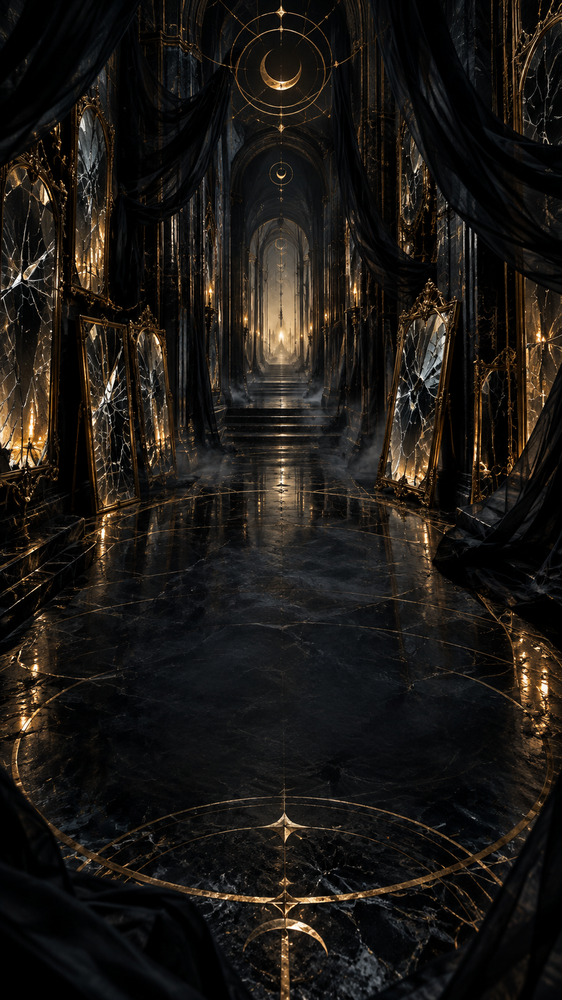
Vous venez pourtant de faire un choix.
Êtes-vous certain qu’il était vraiment le vôtre ?
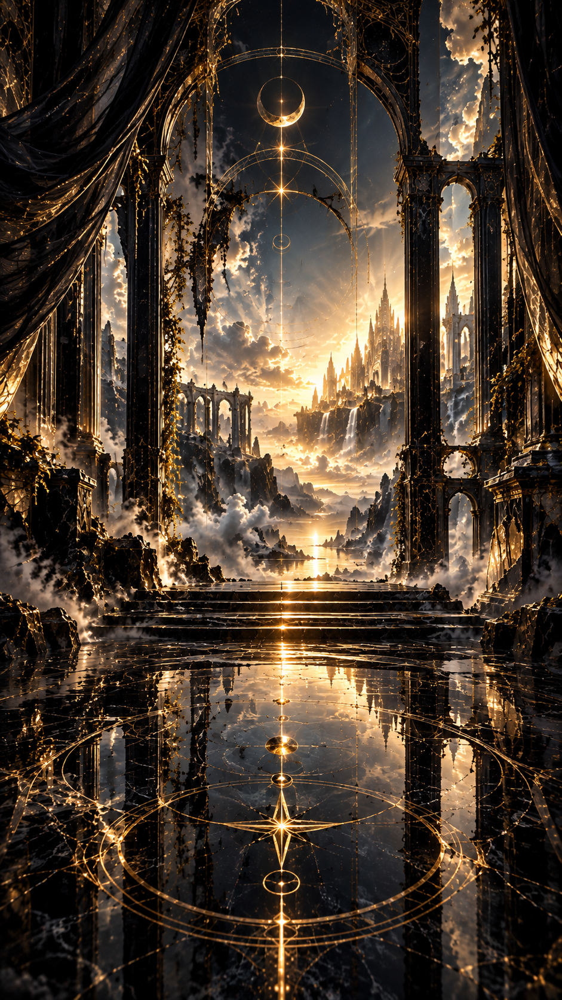
Alors regardez attentivement.
Certaines vérités ne se montrent qu’à ceux qui les cherchent.
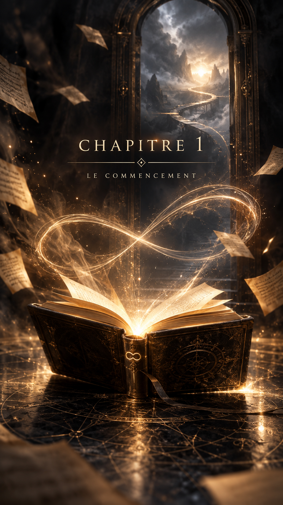